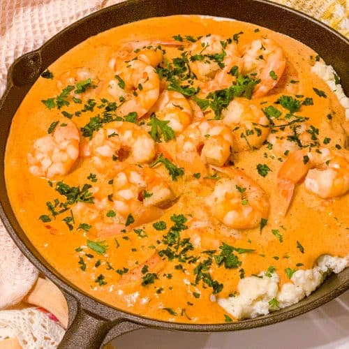

Shrimp and Grits
Spicy shrimp and sausage paired with cheesy grits makes the perfect comfort meal. Happy cooking!
Ingredients
Shrimp
2 tablespoons butter
1 tablespoon olive oil
1 small onion, finely chopped
1 small green bell pepper, finely chopped
1 stalk celery, finely chopped
4 cloves garlic, minced
2 tablespoons all-purpose flour
1 tablespoon cajun seasoning, or to taste
1/2 teaspoon cayenne pepper, or to taste
3 links cooked Andouille sausage, halved and sliced
1 cup chicken broth
15oz diced fire-roasted tomatoes, undrained
1 pound fresh shrimp, peeled, deveined an tail removed
1/3 cup heavy cream
salt and freshly ground black pepper, to taste
2 tablespoons chopped parsley, more for garnish
Grits
3 cups chicken broth
salt, to taste
1/2 cup quick grits
1/2 cup freshly grated Parmesan cheese
2 tablespoons heavy cream
1 tablespoon freshly ground black pepper